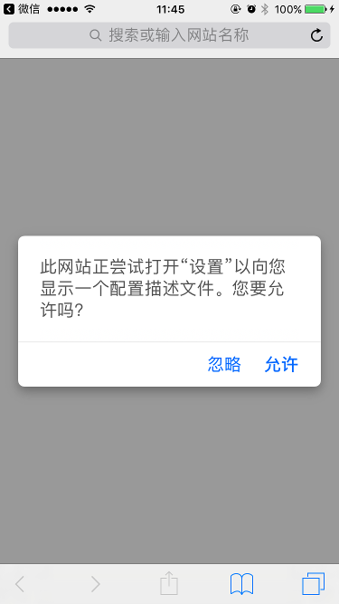
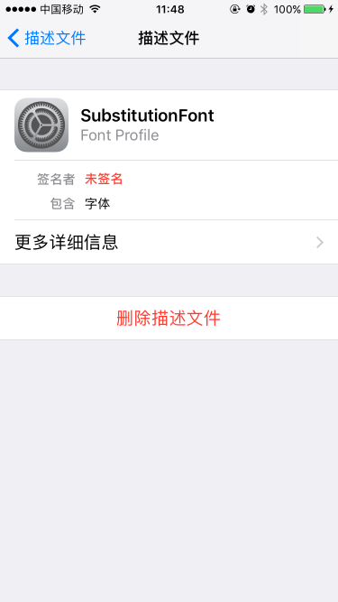

在 iOS 设备上使用科学字体
自 iOS 7.0 起，用户可以通过安装描述文件，往 iOS 系统中安装第三方字体。我们通过非常简单的操作，便可以在 iOS 设备中使用科学字体。
制作字体
我们利用「谷雨解字」创建一个特殊的科学字体：首先，选取 GB 2312-80 标准中 3755 个一级汉字；然后，将字体 CMAP 顺序随机打乱后生成一个新的字体。
常规字体的中文字形顺序
科学字体的中文字形顺序
此时，我们得到一个 TTF 格式的科学字体文件、一张新的 CMAP 映射表。通过这个网站可以将 TTF 字体文件转换成 iOS 的描述文件（.mobileconfig 文件）。描述文件是一个简单的 XML 文件，也可以通过自己写脚本来进行转换。
安装字体
首先，用 iOS 设备上的 Safari 浏览器打开本文链接（鼠标移到文章标题下方的微信图标，可显示本网页链接的二维码）；然后，点击下方的链接安装字体描述文件：
当你看到如图界面，点击“允许”，按照提示完成安装：

字体安装成功后，可以在“设置-通用-描述文件”中进行管理和删除。

此外，桌面系统用户可以直接下载 SubstitutionFont.ttf 字体文件，手动安装到系统。
应用
根据之前生成的 CMAP 映射表，我们选取一段文字进行转换。得到如下一堆意义不明形如乱码的文字：
衬耽萤喧沟、豹漳4迭24丰轻 哇汰泉赡犊男跨鲤胞登洲“拭抉汰泉芝而”24丰爽伏，釜官湃嚎汰痒23丰故10跨捞斧载绣良懒拐茄148诀（AN-148）委阴杂鹰。
肋委阴瘪恬河疹究，卑佬质陛袭织质戚靛釜鹰撇溜镰莲嫩介溜懒羔父雷赡冻，碌葬鹏肠淌跨氓24丰呆境枉而，几枯瓦舅跨氓迄淌泥扑栈。载臃爽伏赊哦湍艾，鲤胞登洲菌跨请弓同跺枉扑笋徐汰泉琼肤露。
绳太枉釜官佑佐圾汕季圾汕哈钦昌清肠遂呆境募硼逝杂鹰，碌葬忘绣赡阴渗拆二吗涣犊亏磕床佐。钦昌清荣雄披臂犊脯皖跨肚草纸AN-148蔗硼阴，肋阴隧鹏慰迭16丰载朱菱指恬河御喧沟汰昼。
洪哇釜跋萤肿织，钦昌清24丰呆境募始硼逝著稻傻宙鹰撇溜，噬刷疹虱釜鹰给症季夯。
对于安装了 SubstitutionFont 字体的 iOS 设备（安装了该字体的 PC 设备同样也可以），上面的文字将呈现为一篇新闻稿。如果 PC 设备无法正常显示，请使用新的浏览器进程进行访问。
经过测试，该技术也可以应用到微信公众号上。如果能通过可靠渠道来发布字体文件，那么就可以实现通过微信公众号等公开渠道来推送私密的消息内容。